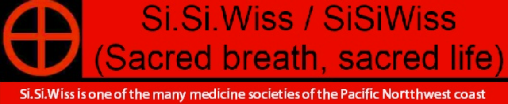
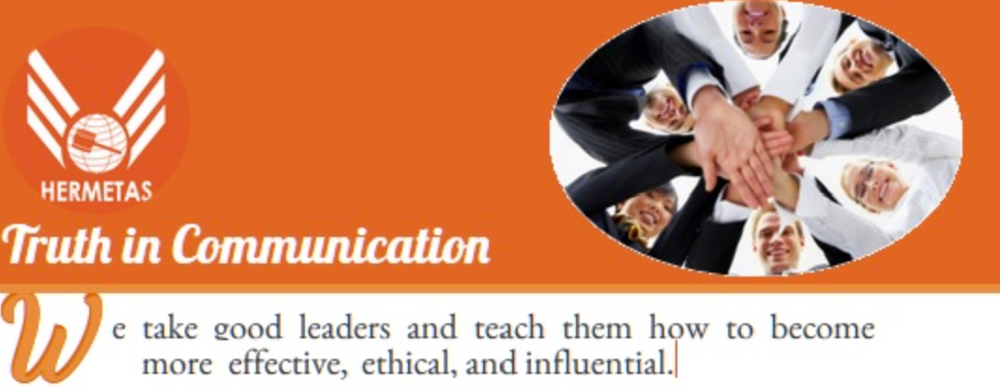
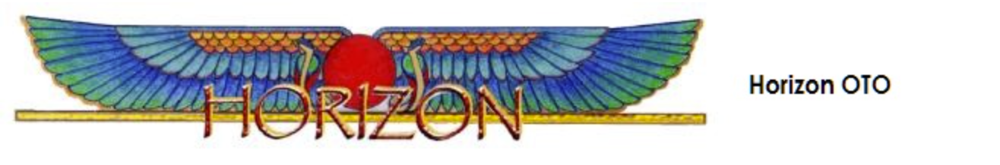
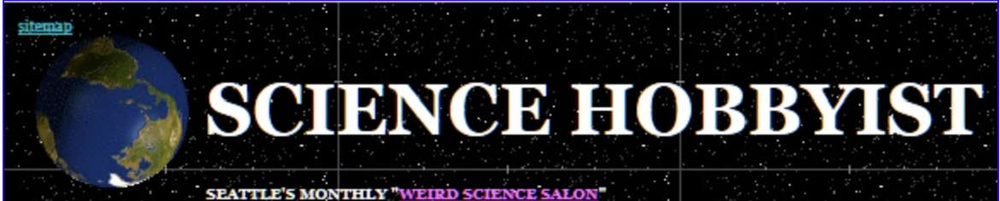

Building Community!
One of the major benefits of the Library has always been the ability to meet people with
similar interests away from the proselytizing atmosphere of sectarian libraries.
Another benefit of Library Membership is a featured link to your own website here in our directory.
This is a good opportunity to support members of our own community.
If you are a current member and would like to be listed, please contact us.
This is also a good place to see some of the magazines that publishers have donated to the library.

SOLYLUNA brings to the subject of Astrology over 30 years of professional practice and research in a wide range of metaphysical studies.
She is dedicated to helping others discover astrology beyond the daily horoscopes and to gain insights into how planetary alignments affect our
realities. She integrates modern techniques and ancient wisdom teachings to shed light on the mysteries of cosmic proportion. All in order to
gain a fuller perspective on current and past life lessons. Her greatest wish is to empower Seekers to clarify and manifest their highest
potential.
She is available for classes in beginning astrology and horoscope synthesis. These could be held weekly-monthly for those who wish to learn
and read astrology charts. Her focus through such work is to inspire each person to become more fully conscious of the purpose of their
life, and how to navigate their unique path to fulfillment.
She is available for workshops, private tutoring, and professional consultations by phone or in person. Her intention is to shed light
on their soul purpose, their Karma, in the present.






Contact us!
If you are a current member and would like to be listed, please contact us.
This is also a good place to see some of the magazines that publishers have donated to the library.